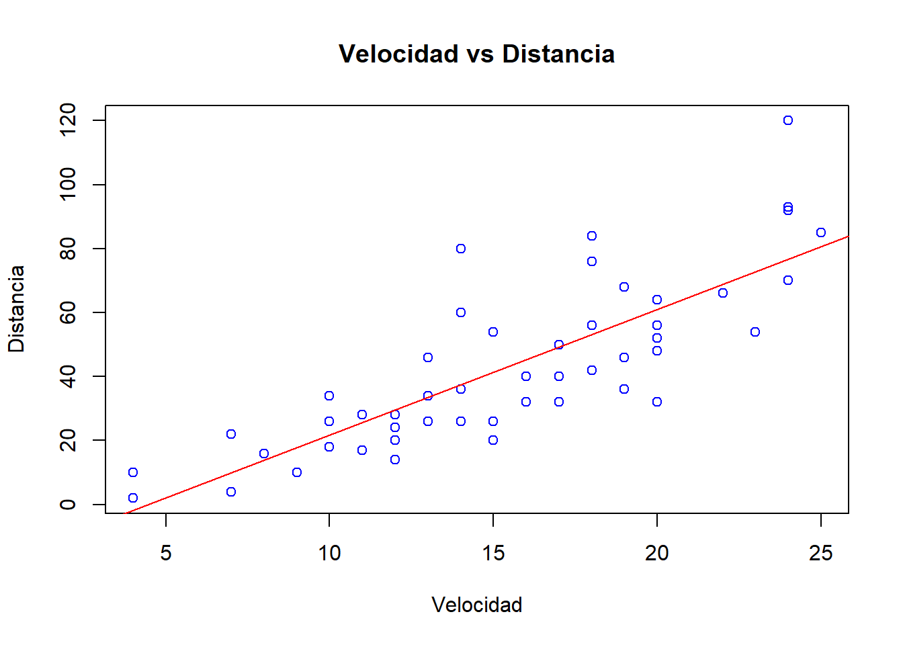
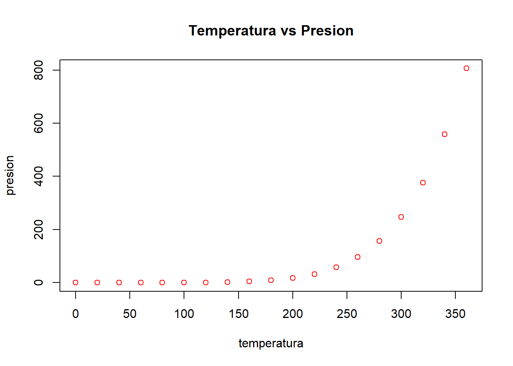
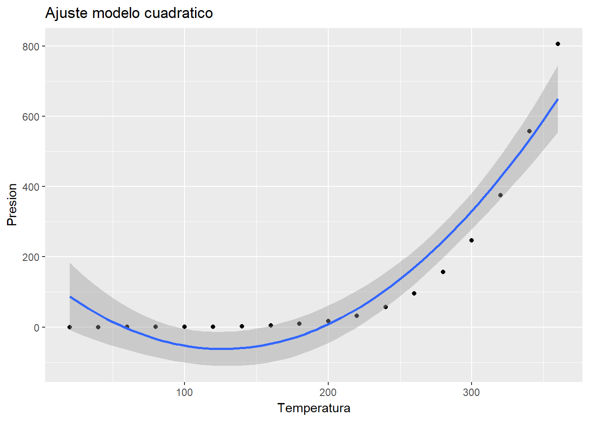

Mi sitio web
Inicio
Profesion
PROFESION
ESTADISTICA

Los anteriores graficos fueron realizados con la base de datos cars de r

Los anteriores graficos fueron realizados con la base de datos pressure de r
Copyright © 2018, webpage made with Rmarkdown.